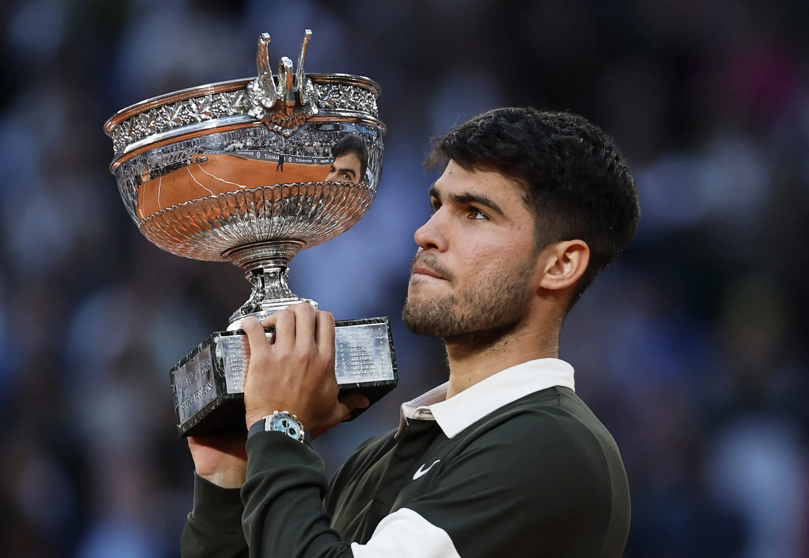
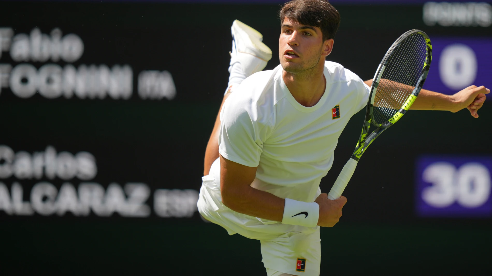
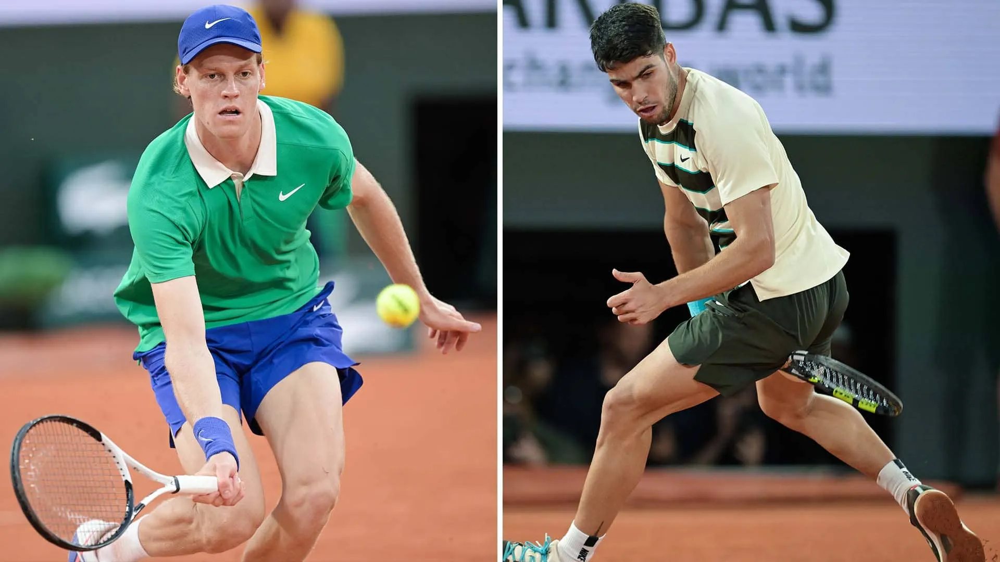

🾠Carlos Alcaraz Garfia
| Dato |
Información |
| 📅 Nacido |
5 mayo 2003, El Palmar (Murcia, España) |
| 📠Altura / Peso |
1,83 m / 74 kg |
| 💼 Profesional desde |
2018 (15 años) |
| 🖐️ Mano / Revés |
Diestro / 2 manos |
| 🆠Ranking ATP |
Actual: No. 2 (mayo 2025)
Histórico: No. 1 (36 semanas) |
| 💰 Premios en 2025 |
US $ 7,422,288 (42–5, 5 tÃtulos) |
| 💰 Premios carrera |
US $ 45,3 M (251–61, 21 tÃtulos: 5 GS, 7 Masters) |
🆠Temporada 2025
- Grand Slam: Defensor del tÃtulo en Roland Garros 2025 (remontada épica 0–2 y salvando 3 bolas de campeonato en la final de 5 h 29 m)
- Masters 1000: Campeón en Monte‑Carlo (vs Musetti, su sexto tÃtulo 1000) y Rome (vs Sinner, su séptimo)

- Otros tÃtulos: Queen’s Club (césped) e indoor en Rotterdam — primeros tÃtulos en esas superficies.
- Logró tÃtulos en las cuatro superficies (arcilla, césped, pista dura exterior e interior), siendo el más joven en la historia (21a 9m)

🖠Equipo técnico y estilo de juego
- Entrenadores:
- Juan Carlos Ferrero (desde 2019)
- Samuel López (desde 2024)
- Estilo:
- Velocidad, agresividad y gran cobertura de pista (comparado con Nadal y Djokovic)
- Golpe favorito: drive; revés sólido a dos manos
- Resiliente mentalmente, con recuperaciones históricas en situaciones lÃmite

🥠Videos destacados
🾠Wimbledon 2025 – 1ª ronda: Victoria épica de Carlos Alcaraz
Carlos Alcaraz protagonizó una impresionante victoria en la primera ronda de Wimbledon 2025 contra Fabio Fognini, en un partido maratónico que duró 4 horas y 37 minutos y se decidió en cinco sets con un marcador de:
7‑5, 6‑7, 7‑5, 2‑6, 6‑1
Detalles destacados:
- Duración: 4 horas y 37 minutos de juego intenso.
- Condiciones: Partido disputado bajo un calor agobiante y condiciones extremas que pusieron a prueba la resistencia fÃsica y mental de ambos tenistas.
- Momentos clave: Alcaraz mostró una gran capacidad de recuperación tras perder el segundo y cuarto set, logrando imponer su juego en el set decisivo con un contundente 6-1.
- Asistencia especial: Durante el partido, la multitud estuvo muy entregada, y se destacó la asistencia de un espectador que vivió la intensidad del encuentro muy de cerca, creando un ambiente electrizante.
Esta victoria reafirma la fortaleza y versatilidad de Alcaraz en superficies de césped y su capacidad para sobreponerse a circunstancias adversas en partidos largos y exigentes.

Roland Garros 2025 – Final épica
En la final de Roland Garros 2025, se vivió una de las remontadas más impresionantes en la historia del tenis. El partido, que duró más de 5 horas, mostró no solo un nivel técnico extraordinario sino también una fortaleza mental sobresaliente por parte del ganador.
- Duración del partido: Más de 5 horas intensas de juego.
- Condiciones: Partido bajo condiciones exigentes, con cambios climáticos que pusieron a prueba la resistencia fÃsica de ambos jugadores.
- Momento clave: El jugador que remontó estaba dos sets abajo y logró dar vuelta el marcador gracias a una combinación de estrategia inteligente y una mentalidad implacable.
- Puntos memorables: Varios puntos de alta tensión que se definieron en largos rallies y donde el desgaste fÃsico fue palpable.
- Impacto: Esta victoria se considera una de las más grandes remontadas en la historia de Roland Garros, demostrando que la perseverancia y el enfoque pueden superar cualquier obstáculo.
Contexto:
Este triunfo consolidó al campeón como uno de los grandes del tenis moderno, dejando una huella imborrable en el torneo y ofreciendo a los aficionados un espectáculo inolvidable.
